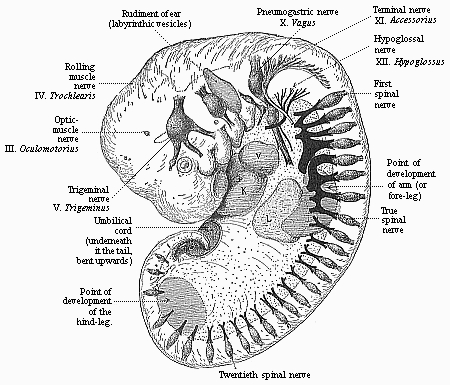

THE EVOLUTION OF MAN
Volume I
CHAPTER XIV
THE ARTICULATION OF THE BODY1
The vertebrate stem, to which our race belongs as
one of the latest and most advanced outcomes of the natural
development of life, is rightly placed at the head of the animal
kingdom. This privilege must be accorded to it, not only because
man does in point of fact soar far above all other animals, and has
been lifted to
1. The term articulation is used in this chapter
to denote both “segmentation” and
“articulation” in the ordinary
sense.—Translator.
[ 142 ]
the position of “lord of creation”; but
also because the vertebrate organism far surpasses all the other
animal-stems in size, in complexity of structure, and in the
advanced character of its functions. From the point of view of both
anatomy and physiology, the vertebrate stem outstrips all the
other, or invertebrate, animals.
There is only one among the twelve stems of the animal kingdom
that can in many respects be compared with the vertebrates, and
reaches an equal, if not a greater, importance in many points. This
is the stem of the articulates, composed of three classes: 1, the
annelids (earth-worms, leeches, and cognate forms); 2, the
crustacea (crabs, etc.); 3, the tracheata (spiders, insects, etc.).
The stem of the articulates is superior not only to the
vertebrates, but to all other animal-stems, in variety of forms,
number of species, elaborateness of individuals, and general
importance in the economy of nature.
When we have thus declared the vertebrates and the articulates
to be the most important and most advanced of the twelve stems of
the animal kingdom, the question arises whether this special
position is accorded to them on the ground of a peculiarity of
organisation that is common to the two. The answer is that this is
really the case; it is their segmental or transverse articulation,
which we may briefly call metamerism. In all the vertebrates and
articulates the developed individual consists of a series of
successive members (segments or metamera = “parts”); in
the embryo these are called primitive segments or somites. In each
of these segments we have a certain group of organs reproduced in
the same arrangement, so that we may regard each segment as an
individual unity, or a special “individual”
subordinated to the entire personality.
The similarity of their segmentation, and the consequent
physiological advance in the two stems of the vertebrates and
articulates, has led to the assumption of a direct affinity between
them, and an attempt to derive the former directly from the latter.
The annelids were supposed to be the direct ancestors, not only of
the crustacea and tracheata, but also of the vertebrates. We shall
see later (Chapter XX) that this annelid theory of the vertebrates
is entirely wrong, and ignores the most important differences in
the organisation of the two stems. The internal articulation of the
vertebrates is just as profoundly different from the external
metamerism of the articulates as are their skeletal structure,
nervous system, vascular system, and so on. The articulation has
been developed in a totally different way in the two stems. The
unarticulated chordula (Figs.
83–86), which we have recognised as one of the chief
palingenetic embryonic forms of the vertebrate group, and from
which we have inferred the existence of a corresponding ancestral
form for all the vertebrates and tunicates, is quite unthinkable as
the stem-form of the articulates.
All articulated animals came originally from unarticulated ones.
This phylogenetic principle is as firmly established as the
ontogenetic fact that every articulated animal-form develops from
an unarticulated embryo. But the organisation of the embryo is
totally different in the two stems. The chordula-embryo of all the
vertebrates is characterised by the dorsal medullary tube, the
neurenteric canal, which passes at the primitive mouth into the
alimentary canal, and the axial chorda between the two. None of the
articulates, either annelids or arthropods (crustacea and
tracheata), show any trace of this type of organisation. Moreover,
the development of the chief systems of organs proceeds in the
opposite way in the two stems. Hence the segmentation must have
arisen independently in each. This is not at all surprising; we
find analogous cases in the stalk-articulation of the higher plants
and in several groups of other animal stems.
The characteristic internal articulation of the vertebrates and
its importance in the organisation of the stem are best seen in the
study of the skeleton. Its chief and central part, the
cartilaginous or bony vertebral column, affords an obvious instance
of vertebrate metamerism; it consists of a series of cartilaginous
or bony pieces, which have long been known as vertebræ
(or spondyli). Each vertebra is directly connected with a
special section of the muscular system, the nervous system, the
vascular system, etc. Thus most of the “animal organs”
take part in this vertebration. But we saw, when we were
considering our own vertebrate character (in Chapter XI), that the
same internal articulation is also found in the lowest primitive
vertebrates, the acrania, although here the whole skeleton consists
merely of the simple chorda, and is not at all articulated.
[ 143 ]
Hence the articulation does not proceed primarily
from the skeleton, but from the muscular system, and is clearly
determined by the more advanced swimming-movements of the primitive
chordonia-ancestors.

Figs.
153–155—Sole-shaped embryonic disk of the
chick, in three successive stages of development, looked at
from the dorsal surface, magnified, somewhat diagrammatic. Fig. 153
with six pairs of somites. Brain a simple vesicle (hb).
Medullary furrow still wide open from x; greatly widened at
z. mp medullary plates, sp lateral plates, y
limit of gullet-cavity (sh) and fore-gut (vd). Fig.
154 with ten pairs of somites. Brain divided into three vesicles:
v fore-brain, m middle-brain, h hind-brain,
c heart, dv vitelline-veins. Medullary furrow still
wide open behind (z). mp medullary plates. Fig. 155
with sixteen pairs of somites. Brain divided into five vesicles:
v fore-brain, z intermediate-brain, m
middle-brain, h hind-brain, n after-brain, a
optic vesicles, g auditory vesicles, c heart,
dv vitelline veins, mp medullary plate, uw
primitive vertebra. |
It is, therefore, wrong to describe the first rudimentary
segments in the vertebrate embryo as primitive vertebræ or
provertebræ; the fact that they have been so called for some
time has led to much error and misunderstanding. Hence we shall
give the name of “somites” or primitive segments to
these so-called “primitive vertebræ.” If the
latter name is retained at all, it should only be used of the
sclerotom—i.e., the small part of the somites from which the
later vertebra does actually develop.
Articulation begins in all vertebrates at a very early embryonic
stage, and this indicates the considerable phylogenetic age of the
process. When the chordula (Figs. 83–86) has completed its
characteristic composition, often even a little earlier, we find in
the amniotes, in the
[ 144 ]
middle of the sole-shaped embryonic shield, several
pairs of dark square spots, symmetrically distributed on both sides
of the chorda (Figs.
131–135). Transverse sections (Fig. 93 uw) show that they belong
to the stem-zone (episoma) of the mesoderm, and are separated from
the parietal zone (hyposoma) by the lateral folds; in section they
are still quadrangular, almost square, so that they look something
like dice. These pairs of “cubes” of the mesoderm are
the first traces of the primitive segments or somites, the
so-called “protovertebræ.” (Figs. 153–155
uw).
 Fig.
156—Embryo of the amphioxus, sixteen hours old,
seen from the back. (From Hatschek.) d primitive gut,
u primitive mouth, p polar cells of the mesoderm,
c cœlom-pouches, m their first segment, n
medullary tube, i entoderm, e ectoderm, s
first segment-fold.
Fig.
156—Embryo of the amphioxus, sixteen hours old,
seen from the back. (From Hatschek.) d primitive gut,
u primitive mouth, p polar cells of the mesoderm,
c cœlom-pouches, m their first segment, n
medullary tube, i entoderm, e ectoderm, s
first segment-fold. |
Among the mammals the embryos of the marsupials have three pairs
of somites (Fig. 131) after sixty hours, and eight pairs after
seventy-two hours (Fig. 135). They develop more slowly in the
embryo of the rabbit; this has three somites on the eighth day (Fig. 132), and eight somites a day
later (Fig. 134). In the incubated hen’s egg the first
somites make their appearance thirty hours after incubation begins
(Fig. 153). At the end of the second day the number has risen to
sixteen or eighteen (Fig. 155). The articulation of the stem-zone,
to which the somites owe their origin, thus proceeds briskly from
front to rear, new transverse constrictions of the
“protovertebral plates” forming continuously and
successively. The first segment, which is almost half-way down in
the embryonic shield of the amniote, is the foremost of all; from
this first somite is formed the first cervical vertebra with its
muscles and skeletal parts. It follows from this, firstly, that the
multiplication of the primitive segments proceeds backwards from
the front, with a constant lengthening of the hinder end of the
body; and, secondly, that at the beginning of segmentation nearly
the whole of the anterior half of the sole-shaped embryonic shield
of the amniote belongs to the later head, while the whole of the
rest of the body is formed from its hinder half. We are reminded
that in the amphioxus (and in our hypothetic primitive vertebrate,
Figs. 98–102) nearly the whole of the fore half corresponds
to the head, and the hind half to the trunk.
 Fig.
157—Embryo of the amphioxus, twenty hours old, with
five somites. (Right view; for left view see Fig. 124.) (From Hatschek.)
V fore end, H hind end. ak, mk, ik outer, middle,
and inner germinal layers; dh alimentary canal, n
neural tube, cn canalis neurentericus, ush
cœlom-pouches (or primitive-segment cavities), us1
first (and foremost) primitive segment.
Fig.
157—Embryo of the amphioxus, twenty hours old, with
five somites. (Right view; for left view see Fig. 124.) (From Hatschek.)
V fore end, H hind end. ak, mk, ik outer, middle,
and inner germinal layers; dh alimentary canal, n
neural tube, cn canalis neurentericus, ush
cœlom-pouches (or primitive-segment cavities), us1
first (and foremost) primitive segment. |
The number of the metamera, and of the embryonic somites or
primitive segments from which they develop, varies considerably in
the vertebrates, according as the hind part of the body is short or
is lengthened by a tail. In the developed man the trunk (including
the rudimentary tail) consists of thirty-three metamera, the solid
centre of which is formed by that number of vertebræ in the
vertebral column (seven cervical, twelve dorsal, five lumbar, five
sacral, and four caudal). To these we must add at least nine
head-vertebræ, which originally (in all the craniota)
constitute the skull. Thus the total number of the primitive
segments of the human
[ 145 ]
body is raised to at least forty-two; it would reach
forty-five to forty-eight if (according to recent investigations)
the number of the original segments of the skull is put at twelve
to fifteen. In the tailless or anthropoid apes the number of
metamera is much the same as in man, only differing by one or two;
but it is much larger in the long-tailed apes and most of the other
mammals. In long serpents and fishes it reaches several hundred
(sometimes 400).

Figs.
158–160—Embryo of the amphioxus, twenty four
hours old, with eight somites. (From Hatschek.) Figs.
158 and 159 lateral view (from left). Fig. 160 seen from back. In
Fig. 158 only the outlines of the eight primitive segments are
indicated, in Fig. 159 their cavities and muscular walls. V
fore end, H hind end, d gut, du under and
dd upper wall of the gut, ne canalis neurentericus,
nv ventral, nd dorsal wall of the neural tube, np
neuroporus, dv fore pouch of the gut, ch chorda,
mf mesodermic fold, pm polar cells of the mesoderm
(ms), e ectoderm. |
In order to understand properly the real nature and origin of
articulation in the human body and that of the higher vertebrates,
it is necessary to compare it with that of the lower vertebrates,
and bear in mind always the genetic connection of all the members
of the stem. In this the simple development of the invaluable
amphioxus once more furnishes the key to the complex and
cenogenetically modified embryonic processes of the craniota. The
articulation of the amphioxus begins at an early
stage—earlier than in the craniotes. The two
cœlom-pouches have hardly grown out of the primitive gut
(Fig. 156 c) when the blind fore part of it (farthest away
from the primitive mouth, u) begins to separate by a
transverse fold (s): this is the first primitive segment.
Immediately afterwards the hind part of the cœlom-pouches
begins to divide into a series of pieces by new transverse folds
(Fig. 157). The foremost of these primitive segments (us1)
is the first and oldest; in Figs. 124 and 157 there are already
five formed. They separate so rapidly, one behind the other, that
eight pairs are formed within twenty-four hours of the beginning of
development, and seventeen pairs twenty-four hours later. The
number increases as the embryo grows and extends
[ 146 ]
backwards, and new cells are formed constantly (at
the primitive mouth) from the two primitive mesodermic cells (Figs.
159–160).

Figs. 161 and
162—Transverse section of shark-embryos (through
the region of the kidneys). (From Wijhe and Hertwig.)
In Fig. 162 the dorsal segment-cavities (h) are already
separated from the body-cavity (lh), but they are connected
a little earlier (Fig. 161), nr neural tube, ch
chorda, sch subchordal string, ao aorta, sk
skeletal-plate, mp muscle-plate, cp cutis-plate,
w connection of latter (growth-zone), vn primitive
kidneys, ug prorenal duct, uk prorenal canals,
us point where they are cut off, tr prorenal funnel,
mk middle germ-layer (mk1 parietal,
mk2 visceral), ik inner germ-layer (gut-gland
layer). |
This typical articulation of the two cœlom-sacs begins
very early in the lancelet, before they are yet severed from the
primitive gut, so that at first each segment-cavity (us)
still communicates by a narrow opening with the gut, like an
intestinal gland. But this opening soon closes by complete
severance, proceeding regularly backwards. The closed segments then
extend more, so that their upper half grows upwards like a fold
between the ectoderm (ak) and neural tube (n), and
the lower half between the ectoderm and alimentary canal
(ch; Fig. 82 d,
left half of the figure). Afterwards the two halves completely
separate, a lateral longitudinal fold cutting between them
(mk, right half of Fig. 82). The dorsal segments (sd)
provide the muscles of the trunk the whole length of the body
(159): this cavity afterwards disappears. On the other hand, the
ventral parts give rise, from their uppermost section, to the
pronephridia or primitive-kidney canals, and from the lower to the
segmental rudiments of the sexual glands or gonads. The partitions
of the muscular dorsal pieces (myotomes) remain, and
determine the permanent articulation of the vertebrate organism.
But the partitions of the large ventral pieces (gonotomes)
become thinner, and afterwards disappear in part, so that their
cavities run together to form the metacœl, or the simple
permanent body-cavity.
The articulation proceeds in substantially the same way in the
other vertebrates, the craniota, starting from the
cœlom-pouches. But whereas in the former case there is first
a transverse division of the cœlom-sacs (by vertical folds)
and then the dorso-ventral division, the procedure is reversed in
the craniota; in their case each of the long cœlom-pouches
first divides into a dorsal (primitive segment plates) and a
ventral (lateral plates) section by a lateral longitudinal fold.
Only the former are then broken up into primitive segments by the
subsequent vertical folds; while the latter (segmented
[ 147 ]
for a time in the amphioxus) remain undivided, and,
by the divergence of their parietal and visceral plates, form a
body-cavity that is unified from the first. In this case, again, it
is clear that we must regard the features of the younger craniota
as cenogenetically modified processes that can be traced
palingenetically to the older acrania.
We have an interesting intermediate stage between the acrania
and the fishes in these and many other respects in the cyclostoma
(the hag and the lamprey, cf. Chapter XXI).
 Fig.
163—Frontal (or horizontal-longitudinal) section of a
triton-embryo with three pairs of primitive segments. ch
chorda, us primitive segments, ush their cavity,
ak horn plate.
Fig.
163—Frontal (or horizontal-longitudinal) section of a
triton-embryo with three pairs of primitive segments. ch
chorda, us primitive segments, ush their cavity,
ak horn plate. |
Among the fishes the selachii, or primitive fishes, yield the
most important information on these and many other phylogenetic
questions (Figs. 161 and 162). The careful studies of Rückert,
Van Wijhe, H. E. Ziegler, and others, have given us most valuable
results. The products of the middle germinal layer are partly clear
in these cases at the period when the dorsal primitive segment
cavities (or myocœls, h) are still connected with the
ventral body-cavity (lh; Fig. 161). In Fig. 162, a somewhat
older embryo, these cavities are separated. The outer or lateral
wall of the dorsal segment yields the cutis-plate (cp), the
foundation of the connective corium. From its inner or median wall
are developed the muscle-plate (mp, the rudiment of the
trunk-muscles) and the skeletal plate, the formative matter of the
vertebral column (sk).
In the amphibia, also, especially the water-salamander
(Triton), we can observe very clearly the articulation of
the cœlom-pouches and the rise of the primitive segments from
their dorsal half (cf. Fig. 91, A,
B, C). A horizontal longitudinal section of the
salamander-embryo (Fig. 163) shows very clearly the series of pairs
of these vesicular dorsal segments, which have been cut off on each
side from the ventral side-plates, and lie to the right and left of
the chorda.

Fig. 164—The
third cervical vertebra (human).
Fig. 165—The sixth dorsal vertebra (human).
Fig. 166—The second lumbar vertebra (human). |
The metamerism of the amniotes agrees in all essential points
with that of the three lower classes of vertebrates we have
considered; but it varies considerably in detail, in consequence of
cenogenetic disturbances that are due in the first place (like the
degeneration of the cœlom-pouches) to the large development
of the food-yelk. As the pressure of this seems to force the two
middle layers together from the start, and as the solid structure
of the mesoderm apparently belies the original hollow character of
the sacs, the two sections of the mesoderm, which are at that time
divided by the lateral fold—the dorsal segment-plates and
ventral side-plates—have the appearance at first of solid
layers of cells (Figs. 94–97). And when the articulation of
the somites begins in the sole-shaped embryonic shield, and a
couple of protovertebræ are developed in succession,
constantly increasing in number towards the rear, these cube-shaped
somites (formerly called protovertebræ, or primitive
vertebræ) have the appearance of solid dice, made up of
mesodermic cells (Fig. 93). Nevertheless, there is for a time a
ventral cavity, or provertebral cavity, even in these solid
[ 148 ]
“protovertebræ” (Fig. 143 uwh). This vesicular
condition of the provertebra is of the greatest phylogenetic
interest; we must, according to the cœlom theory, regard it
as an hereditary reproduction of the hollow dorsal somites of the
amphioxus (Figs. 156–160) and the
lower vertebrates (Fig. 161–163). This rudimentary
“provertebral cavity” has no physiological significance
whatever in the amniote-embryo; it soon disappears, being filled up
with cells of the muscular plate.

Fig. 167—Head of
a shark embryo (Pristiurus), one-third of an inch long,
magnified. (From Parker.) Seen from the ventral
side." |
The innermost median part of the primitive segment plates, which
lies immediately on the chorda (Fig.
145 ch) and the medullary tube (m), forms the
vertebral column in all the higher vertebrates (it is wanting in
the lowest); hence it may be called the skeleton plate. In
each of the provertebræ it is called the
“sclerotome” (in opposition to the outlying muscular
plate, the “myotome”). From the phylogenetic point of
view the myotomes are much older than the sclerotomes. The lower or
ventral part of each sclerotome (the inner and lower edge of the
cube-shaped provertebra) divides into two plates, which grow round
the chorda, and thus form the foundation of the body of the
vertebra (wh). The upper plate presses between the chorda
and the medullary tube, the lower between the chorda and the
alimentary canal (Fig. 137 C). As the plates of two opposite
provertebral pieces unite from the right and left, a circular
sheath is formed round this part of the chorda. From this develops
the body of a vertebra—that is to say, the massive
lower or ventral half of the bony ring, which is called the
“vertebra” proper and surrounds the medullary tube
(Figs. 164–166). The upper or dorsal half of this bony ring,
the vertebral arch (Fig. 145 wb), arises in just the same
way from the upper part of the skeletal plate, and therefore from
the inner and upper edge of the cube-shaped primitive vertebra. As
the upper edges of two opposing somites grow together over the
medullary tube from right and left, the vertebra-arch becomes
closed.
The whole of the secondary vertebra, which is thus formed from
the union of the skeletal plates of two provertebral pieces
[ 149 ]
and encloses a part of the chorda in its body,
consists at first of a rather soft mass of cells; this afterwards
passes into a firmer, cartilaginous stage, and finally into a
third, permanent, bony stage. These three stages can generally be
distinguished in the greater part of the skeleton of the higher
vertebrates; at first most parts of the skeleton are soft, tender,
and membranous; they then become cartilaginous in the course of
their development, and finally bony.
 Fig. 168 and
169—Head of a chick embryo, of the third day. Fig.
168 from the front, Fig. 169 from the right. n rudimentary
nose (olfactory pit), l rudimentary eye (optic pit,
lens-cavity), g rudimentary ear (auditory pit), v
fore-brain, gl eye-cleft. Of the three pairs of gill-arches
the first has passed into a process of the upper jaw (o) and
of the lower jaw (u). (From Kölliker.)
Fig. 168 and
169—Head of a chick embryo, of the third day. Fig.
168 from the front, Fig. 169 from the right. n rudimentary
nose (olfactory pit), l rudimentary eye (optic pit,
lens-cavity), g rudimentary ear (auditory pit), v
fore-brain, gl eye-cleft. Of the three pairs of gill-arches
the first has passed into a process of the upper jaw (o) and
of the lower jaw (u). (From Kölliker.) |
At the head part of the embryo in the amniotes there is not
generally a cleavage of the middle germinal layer into provertebral
and lateral plates, but the dorsal and ventral somites are blended
from the first, and form what are called the
“head-plates” (Fig. 148 k). From these are
formed the skull, the bony case of the brain, and the muscles and
corium of the body. The skull develops in the same way as the
membranous vertebral column. The right and left halves of the head
curve over the cerebral vesicle, enclose the foremost part of the
chorda below, and thus finally form a simple, soft, membranous
capsule about the brain. This is afterwards converted into a
cartilaginous primitive skull, such as we find permanently in many
of the fishes. Much later this cartilaginous skull becomes the
permanent bony skull with its various parts. The bony skull in man
and all the other amniotes is more highly differentiated and
modified than that of the lower vertebrates, the amphibia and
fishes. But as the one has arisen phylogenetically from the other,
we must assume that in the former no less than the latter the skull
was originally formed from the sclerotomes of a number of (at least
nine) head-somites.
 Fig.
170—Head of a dog embryo, seen from the front.
a the two lateral halves of the foremost cerebral vesicle,
b rudimentary eye, c middle cerebral vesicle, de
first pair of gill-arches (e upper-jaw process, d
lower-jaw process), f, f ', f ", second, third, and fourth
pairs of gill-arches, g h i k heart (g right,
h left auricle; i left, k right ventricle),
l origin of the aorta with three pairs of arches, which go to
the gill-arches. (From Bischoff.)
Fig.
170—Head of a dog embryo, seen from the front.
a the two lateral halves of the foremost cerebral vesicle,
b rudimentary eye, c middle cerebral vesicle, de
first pair of gill-arches (e upper-jaw process, d
lower-jaw process), f, f ', f ", second, third, and fourth
pairs of gill-arches, g h i k heart (g right,
h left auricle; i left, k right ventricle),
l origin of the aorta with three pairs of arches, which go to
the gill-arches. (From Bischoff.) |
While the articulation of the vertebrate body is always obvious
in the episoma or dorsal body, and is clearly expressed in
the segmentation of the muscular plates and vertebræ, it is
more latent in the hyposoma or ventral body. Nevertheless,
the hyposomites of the vegetal half of the body are not less
important than the episomites of the animal half. The segmentation
in the ventral cavity affects the following principal systems of
organs: 1, the gonads or sex-glands (gonotomes); 2, the nephridia
or kidneys (nephrotomes); and 3, the head-gut with its gill-clefts
(branchiotomes).
The metamerism of the hyposoma is less conspicuous because in
all the craniotes the cavities of the ventral segments, in the
walls of which the sexual products are developed, have long since
coalesced, and formed a single large body-cavity, owing to the
disappearance of the partition. This cenogenetic process is so old
that the cavity seems to be unsegmented from the first in all the
craniotes, and the rudiment of the gonads also is almost always
unsegmented. It is the more interesting to learn that, according to
the important discovery of Rückert, this sexual structure is
at first segmental even in the actual selachii, and the several
[ 150 ]
gonotomes only blend into a simple sexual gland on
either side secondarily.
Amphioxus, the sole surviving representative of the acrania,
once more yields us most interesting information; in this case the
sexual glands remain segmented throughout life. The sexually mature
lancelet has, on the right and left of the gut, a series of
metamerous sacs, which are filled with ova in the female and sperm
in the male. These segmental gonads are originally nothing else
than the real gonotomes, separate body-cavities, formed from the
hyposomites of the trunk.

Fig. 171—Human
embryo of the fourth week (twenty-six days old), one-fourth of
an inch in length, magnified. (From Moll.) The rudiments of
the cerebral nerves and the roots of the spinal nerves are
especially marked. Underneath the four gill-arches (left side) is
the heart (with auricle, V, and ventricle, K), under
this again the liver (L). |
The gonads are the most important segmental organs of the
hyposoma, in the sense that they are phylogenetically the oldest.
We find sexual glands (as pouch-like appendages of the gastro-canal
system) in most of the lower animals, even in the medusæ,
etc., which have no kidneys. The latter appear first (as a pair of
excretory tubes) in the platodes (turbellaria), and have probably
been inherited from these by the articulates
[ 151 ]
(annelids) on the one hand and the unarticulated
prochordonia on the other, and from these passed to the articulated
vertebrates. The oldest form of the kidney system in this stem are
the segmental pronephridia or prorenal canals, in the same
arrangement as Boveri found them in the amphioxus. They are small
canals that lie in the frontal plane, on each side of the chorda,
between the episoma and hyposoma
(Fig. 102 n); their internal funnel-shaped opening leads
into the various body-cavities, their outer opening is the lateral
furrow of the epidermis. Originally they must have had a double
function, the carrying away of the urine from the episomites and
the release of the sexual cells from the hyposomites.
The recent investigations of Ruckert and Van Wijhe on the
mesodermic segments of the trunk and the excretory system of the
selachii show that these “primitive fishes” are closely
related to the amphioxus in this further respect. The transverse
section of the shark-embryo in Fig. 161 shows this very
clearly.
In other higher vertebrates, also, the kidneys develop (though
very differently formed later on) from similar structures, which
have been secondarily derived from the segmental pronephridia of
the acrania. The parts of the mesoderm at which the first traces of
them are found are usually called the middle or mesenteric plates.
As the first traces of the gonads make their appearance in the
lining of these middle plates nearer inward (or the middle) from
the inner funnels of the nephro-canals, it is better to count this
part of the mesoderm with the hyposoma.
The chief and oldest organ of the vertebrate hyposoma, the
alimentary canal, is generally described as an unsegmented organ.
But we could just as well say that it is the oldest of all the
segmented organs of the vertebrate; the double row of the
cœlom-pouches grows out of the dorsal wall of the gut, on
either side of the chorda. In the brief period during which these
segmental cœlom-pouches are still openly connected with the
gut, they look just like a double chain of segmented visceral
glands. But apart from this, we have originally in all vertebrates
an important articulation of the fore-gut, that is wanting in the
lower gut, the segmentation of the branchial (gill) gut.
 Fig.
172—Transverse section of the shoulder and
fore-limb (wing) of a chick-embryo of the fourth day, magnified
about twenty times. Beside the medullary tube we can see on each
side three clear streaks in the dark dorsal wall, which advance
into the rudimentary fore-limb or wing (e). The uppermost of
them is the muscular plate; the middle is the hind and the lowest
the fore root of a spinal nerve. Under the chorda in the middle is
the single aorta, at each side of it a cardinal vein, and below
these the primitive kidneys. The gut is almost closed. The ventral
wall advances into the amnion, which encloses the embryo. (From
Remak.)
Fig.
172—Transverse section of the shoulder and
fore-limb (wing) of a chick-embryo of the fourth day, magnified
about twenty times. Beside the medullary tube we can see on each
side three clear streaks in the dark dorsal wall, which advance
into the rudimentary fore-limb or wing (e). The uppermost of
them is the muscular plate; the middle is the hind and the lowest
the fore root of a spinal nerve. Under the chorda in the middle is
the single aorta, at each side of it a cardinal vein, and below
these the primitive kidneys. The gut is almost closed. The ventral
wall advances into the amnion, which encloses the embryo. (From
Remak.) |
The gill-clefts, which originally in the older acrania pierced
the wall of the fore-gut, and the gill-arches that separated them,
were presumably also segmental, and distributed among the various
metamera of the chain, like the gonads in the after-gut and the
nephridia. In the amphioxus, too, they are still segmentally
formed. Probably there was a division of labour of the hyposomites
in the older (and long extinct) acrania, in such wise that those of
the fore-gut took over the function of breathing and those of the
after-gut that of reproduction. The former developed into
gill-pouches, the latter into sex-pouches. There may have been
primitive kidneys in both. Though the gills have lost their
function in the higher animals, certain parts of them have been
generally maintained in the embryo by a tenacious heredity. At a
very early stage we notice in the embryo of man and the other
amniotes, at each side of the head, the remarkable and important
structures which we call the gill-arches and gill-clefts (Figs. 167–170 f). They belong to the
characteristic and inalienable organs of the amniote-embryo, and
are found always in the same
[ 152 ]
spot and with the same arrangement and structure.
There are formed to the right and left in the lateral wall of the
fore-gut cavity, in its foremost part, first a pair and then
several pairs of sac-shaped inlets, that pierce the whole thickness
of the lateral wall of the head. They are thus converted into
clefts, through which one can penetrate freely from without into
the gullet. The wall thickens between these branchial folds, and
changes into an arch-like or sickle-shaped piece—the gill, or
gullet-arch. In this the muscles and skeletal parts of the
branchial gut separate; a blood-vessel arch rises afterwards on
their inner side (Fig. 98 ka). The number of the branchial
arches and the clefts that alternate with them is four or five on
each side in the higher vertebrates (Fig. 170 d, f, f ', f
"). In some of the fishes (selachii) and in the cyclostoma we
find six or seven of them permanently.
 Fig.
173—Transverse section of the pelvic region and
hind legs of a chick-embryo of the fourth day, magnified. h
horn-plate, w medullary tube, n canal of the tube,
u primitive kidneys, x chorda, e hind legs,
b allantoic canal in the ventral wall, t aorta,
v cardinal veins, a gut, d gut-gland layer,
f gut-fibre layer, g embryonic epithelium, r
dorsal muscles, c body-cavity or cœloma. (From
Waldeyer.)
Fig.
173—Transverse section of the pelvic region and
hind legs of a chick-embryo of the fourth day, magnified. h
horn-plate, w medullary tube, n canal of the tube,
u primitive kidneys, x chorda, e hind legs,
b allantoic canal in the ventral wall, t aorta,
v cardinal veins, a gut, d gut-gland layer,
f gut-fibre layer, g embryonic epithelium, r
dorsal muscles, c body-cavity or cœloma. (From
Waldeyer.) |
These remarkable structures had originally the function of
respiratory organs—gills. In the fishes the water that serves
for breathing, and is taken in at the mouth, still always passes
out by the branchial clefts at the sides of the gullet. In the
higher vertebrates they afterwards disappear. The branchial arches
are converted partly into the jaws, partly into the bones of the
tongue and the ear. From the first gill-cleft is formed the
tympanic cavity of the ear.
There are few parts of the vertebrate organism that, like the
outer covering or integument of the body, are not subject to
metamerism. The outer skin (epidermis) is unsegmented from
the first, and proceeds from the continuous horny plate. Moreover,
the underlying cutis is also not metamerous, although it
develops from the segmental structure of the cutis-plates (Figs.
161, 162 cp). The vertebrates are strikingly and profoundly
different from the articulates in these respects also.
Further, most of the vertebrates still have a number of
unarticulated organs, which have arisen locally, by adaptation of
particular parts of the body to certain special functions. Of this
character are the sense-organs in the episoma, and the limbs, the
heart, the spleen, and the large visceral glands—lungs,
liver, pancreas, etc.—in the hyposoma. The heart is
originally only a local spindle-shaped enlargement of the large
ventral blood-vessel or principal vein, at the point where the
subintestinal passes into the branchial artery, at the limit of the
head and trunk (Figs. 170, 171). The three higher
sense-organs—nose, eye, and ear—were originally
developed in the same form in all the craniotes, as three pairs of
small depressions in the skin at the side of the head.
The organ of smell, the nose, has the appearance of a pair of
small pits above the mouth-aperture, in front of the head (Fig. 169
n). The organ of sight, the eye, is found at the side of the
head, also in the shape of a depression (Figs. 169 l, 170
b), to which corresponds a large outgrowth of the foremost
cerebral vesicle on each side. Farther behind, at each side of the
head, there is a third depression, the first trace of the organ of
hearing (Fig. 169 g). As yet we can see nothing of the later
elaborate structure of these organs, nor of the characteristic
build of the face.
When the human embryo has reached
[ 153 ]
When the human embryo has reached this stage of
development, it can still scarcely be distinguished from that of
any other higher vertebrate. All the chief parts of the body are
now laid down: the head with the primitive skull, the rudiments of
the three higher sense-organs and the five cerebral vesicles, and
the gill-arches and clefts; the trunk with the spinal cord, the
rudiment of the vertebral column, the chain of metamera, the heart
and chief blood-vessels, and the kidneys. At this stage man is a
higher vertebrate, but shows no essential morphological difference
from the embryos of the mammals, the birds, the reptiles, etc. This
is an ontogenetic fact of the utmost significance. From it we can
gather the most important phylogenetic conclusions.

Fig.
174—Development of the lizard’s legs
(Lacerta agilis), with special relation to their
blood-vessels. 1, 3, 5, 7, 9, 11 right fore-leg; 13,
15 left fore-leg; 2, 4, 6, 8, 10, 12 right hind-leg;
14, 16 left hind-leg; SRV lateral veins of the trunk,
VU umbilical vein. (From F. Hochstetter.)" |
There is still no trace of the limbs. Although head and trunk
are separated and all the principal internal organs are laid down,
there is no indication whatever of the “extremities” at
this stage; they are formed later on. Here again we have a fact of
the utmost interest. It proves that the older vertebrates had no
feet, as we find to be the case in the lowest living vertebrates
(amphioxus and the cyclostoma). The descendants of these ancient
footless vertebrates only acquired extremities—two fore-legs
and two hind-legs—at a much later stage of development.
[ 154 ]
These were at first all alike, though they
afterwards vary considerably in structure—becoming fins (of
breast and belly) in the fishes, wings and legs in the birds, fore
and hind legs in the creeping animals, arms and legs in the apes
and man. All these parts develop from the same simple original
structure, which forms secondarily from the trunk-wall (Figs. 172,
173). They have always the appearance of two pairs of small buds,
which represent at first simple roundish knobs or plates. Gradually
each of these plates becomes a large projection, in which we can
distinguish a small inner part and a broader outer part. The latter
is the rudiment of the foot or hand, the former that of the leg or
arm. The similarity of the original rudiment of the limbs in
different groups of vertebrates is very striking.

Fig. 175—Human
embryo, five weeks old, half an inch long, seen from the right,
magnified. (From Russel Bardeen and Harmon Lewis.) In
the undissected head we see the eye, mouth, and ear. In the trunk
the skin and part of the muscles have been removed, so that the
cartilaginous vertebral column is free; the dorsal root of a spinal
nerve goes out from each vertebra (towards the skin of the back).
In the middle of the lower half of the figure part of the ribs and
intercostal muscles are visible. The skin and muscles have also
been removed from the right limbs; the internal rudiments of the
five fingers of the hand, and five toes of the foot, are clearly
seen within the fin-shaped plate, and also the strong network of
nerves that goes from the spinal cord to the extremities. The tail
projects under the foot, and to the right of it is the first part
of the umbilical cord. |
How the five fingers or toes with their
[ 155 ]
blood-vessels gradually differentiate within the
simple fin-like structure of the limbs can be seen in the instance
of the lizard in Fig. 174. They are formed in just the same way in
man: in the human embryo of five weeks the five fingers can clearly
be distinguished within the fin-plate (Fig. 175).
The careful study and comparison of human embryos with those of
other vertebrates at this stage of development is very instructive,
and reveals more mysteries to the impartial student than all the
religions in the world put together. For instance, if we compare
attentively the three successive stages of development that are
represented, in twenty different amniotes we find a remarkable
likeness. When we see that as a fact twenty different amniotes of
such divergent characters develop from the same embryonic form, we
can easily understand that they may all descend from a common
ancestor.

Figs.
176–178—Embryos of the bat (Vespertilio
murinus) at three different stages. (From Oscar
Schultze.) Fig. 176: Rudimentary limbs (v fore-leg,
h hind-leg). l lenticular depression, r olfactory
pit, ok upper jaw, uk lower jaw,
k2, k3, k4
first, second and third gill-arches, a amnion, n
umbilical vessel, d yelk-sac. Fig. 177: Rudiment of flying
membrane, membranous fold between fore and hind leg. n
umbilical vessel, o ear-opening, f flying membrane.
Fig. 178: The flying membrane developed and stretched across the
fingers of the hands, which cover the face. |
In the first stage of development, in which the head with the
five cerebral vesicles is already clearly indicated, but there are
no limbs, the embryos of all the vertebrates, from the fish to man,
are only incidentally or not at all different from each other. In
the second stage, which shows the limbs, we begin to see
differences between the embryos of the lower and higher
vertebrates; but the human embryo is still hardly distinguishable
from that of the higher mammals. In the third stage, in which the
gill-arches have disappeared and the face is formed, the
differences become more pronounced. These are facts of a
significance that cannot be exaggerated.1
1. Because they show how the most diverse
structures may be developed from a common form. As we actually see
this in the case of the embryos, we have a right to assume it in
that of the stem-forms. Nevertheless, this resemblance, however
great, is never a real identity. Even the embryos of the different
individuals of one species are usually not really identical. If the
reader can consult the complete edition of this work at a library,
he will find six plates illustrating these twenty embryos.
[ 156 ]
If there is an intimate causal connection between the processes
of embryology and stem-history, as we must assume in virtue of the
laws of heredity, several important phylogenetic conclusions follow
at once from these ontogenetic facts. The profound and remarkable
similarity in the embryonic development of man and the other
vertebrates can only be explained when we admit their descent from
a common ancestor. As a fact, this common descent is now accepted
by all competent scientists; they have substituted the natural
evolution for the supernatural creation of organisms.
Title and Contents
Glossary
Chapter XIII
Chapter XV
Figs. 1–209
Figs. 210–408